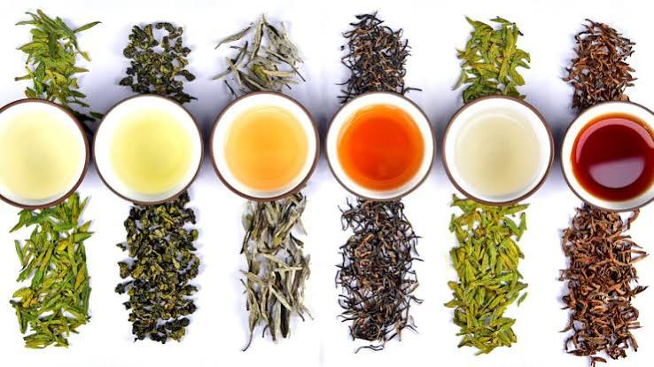

Origin of tea
Tea is one of the oldest and most widely consumed beverages in the world, originating thousands of years ago. Although many associate tea with British culture, its true historical roots begin in ancient Asia. Over centuries, different preparation methods and tea varieties spread globally across trade routes. Today, tea represents distinct cultural traditions, hospitalities, and ceremonies across many countries.
Key Historical Dates
- 2737 BC: According to legend, Emperor Shennong discovers tea in China.
- 760 AD: Lu Yu writes the "Classic of Tea," documenting brewing techniques.
- 1610 AD: Dutch traders import the first commercial shipments of tea to Europe.
- 1838 AD: The British East India Company begins commercial tea farming in Assam, India.
Fast Facts About Chinese Tea
- Green tea undergoes minimal oxidation to retain fresh flavors.
- White tea is harvested from young tea buds.
- Yellow tea undergoes a unique "yellowing" drying process.
- Black tea is fully oxidized before drying.

"Tea is a drink that nourishes human life and brings tranquility to the mind." - Lu Yu, The Classic of Tea
Watch How Tea is Harvested
Learn more on Wikipedia's History of Tea Page